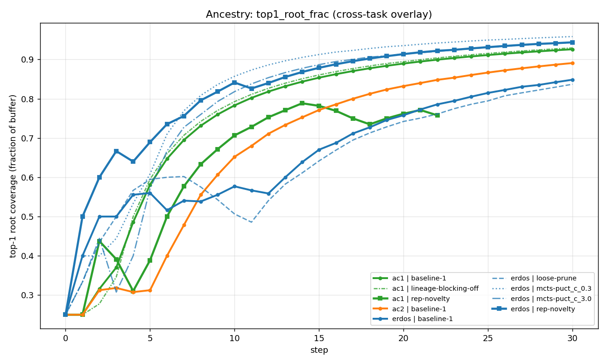
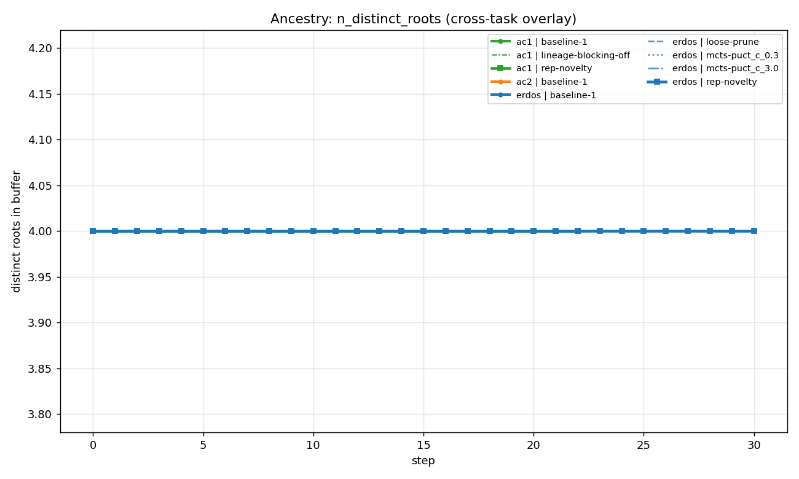
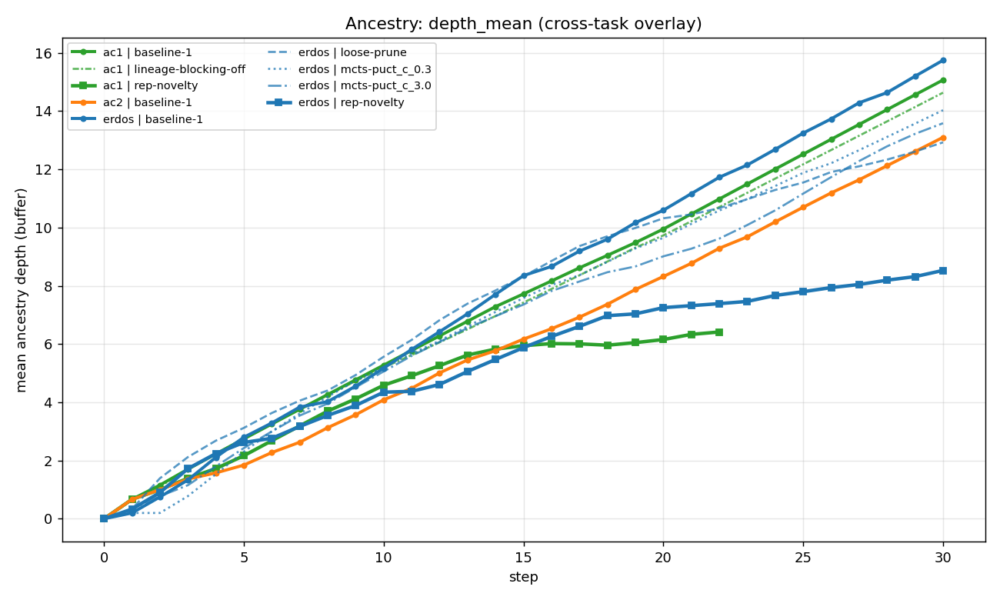

H1 EXPERIMENT
H1 — Buffer monomorphism is universal
Every TTT-Discover baseline collapses to one dominant root lineage within ~10-20 steps, regardless of task or knob setting. The other seeds survive in the buffer but stop being expanded.
Key numbers
| Run | Top-1 root coverage | Distinct roots | Monomorphic (80/10) |
|---|---|---|---|
| erdos-baseline | 84.8% | 4 | YES |
| erdos-loose-prune | 83.7% | 4 | YES |
| erdos-mcts c=0.3 | 95.8% | 4 | YES |
| erdos-mcts c=3.0 | 94.3% | 4 | YES |
| ac1-baseline | 92.6% | 4 | YES |
| ac1-noblock | 92.9% | 4 | YES |
| ac2-baseline | 89.1% | 4 | YES |
Evidence



What it means
TTT-Discover always picks one seed and exploits it. The "search" is effectively a single-lineage search after the first 10-20 epochs. Whatever broad exploration the original 4 seeds were supposed to provide is structurally undone by selection pressure.